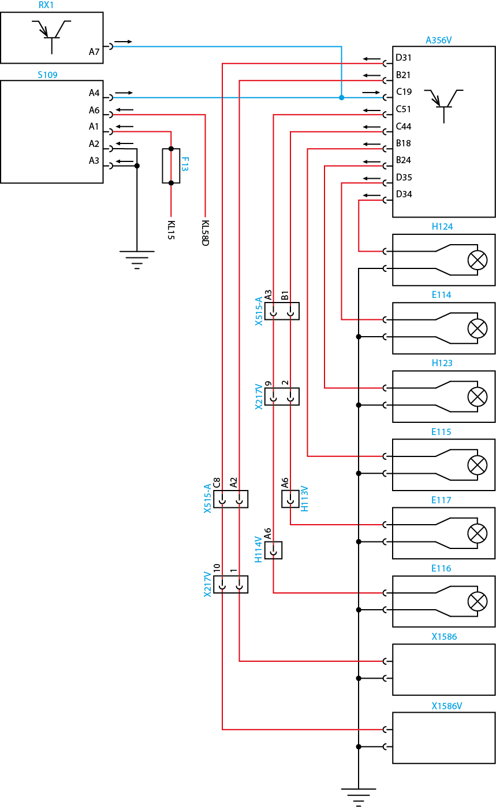

Nota:
Leia sempre as Recomendações para Diagnósticos.
Unidade Lógica (LU) - Worker Euro V
código1815-05
Descrição da falha
Saída de seta lateral direita com circuito aberto.
Causa
Sinal de saída da seta lateral direita, com circuito aberto.
Efeito da falha
A frequência de piscadas do sistema de luzes direcionais é dobrado.
Circuito

Legenda
| RX1 | Volksnet |
| S109 | Interruptor luz de emergência |
| F13 | Fusível 13 |
| A356V | LU (Unidade Lógica) |
| H124 | Lâmpada da Luz indicadora de direçao lateral, lado direito |
| E114 | Lâmpada da Luz indicadora de direção dianteira, lado direito |
| H123 | Lâmpada da Luz indicadora de direção lateral, lado esquerdo |
| E115 | Lâmpada da Luz indicadora de direção dianteira, lado esquerdo |
| E117 | Lâmpada da luz indicadora de direção traseira, lado esquerdo |
| E116 | Lâmpada da luz indicadora de direção traseira, lado direito |
| X1586 | Conector do trailer 1 lado direito (4 pinos) |
| X1586V | Conector do trailer 1 lado esquerdo (4 pinos) |
| X515-A | Conector de interface A |
| X217V | Conector entre os chicotes dianteiro/traseiro |
| H113V | Conector das lâmpadas trazeiras lado esquerdo |
| H114V | Conector das lâmpadas trazeiras lado direito |
| X217V | Conector entre os chicotes dianteiro/traseiro |
Avisos
|
Nota: Leia sempre as Recomendações para Diagnósticos.
|
Verifique visualmente o circuito de comando e o das lâmpadas quanto a fios derretidos, descascados. Verifique também as condições das
Lâmpadas e soquetes.
Verifique os conectores quanto a pinos tortos e oxidados
Passos do diagnóstico de falhas
Etapa 01
Chave de ignição na posição desligada. Meça a continuidade entre os terminais D34 da Unidade Lógica (LU) A356V e lâmpada da luz indicadora de direçao lateral, lado direito H124. Existe continuidade?
|
 |
Etapa 02
Repare o chicote elétrico; Apague o código de falhas; Refaça o teste;
|
 |
||
Etapa 03
Meça a continuidade entre o massa da (lâmpada da luz indicadora de direçao lateral, lado direito H124) e o ponto de massa do veículo. Existe continuidade?Está ok?
|
|
Etapa 04
Repare o chicote elétrico; Apague o código de falhas; Refaça o teste;
|
|
||
Etapa 05
Para fins de teste, substitua a Unidade Lógica (LU) A356V, e vá para a etapa 06.
|
||
 |
||
Etapa 06
Conecte todos os conectores. Chave de ignição na posição ligada. Apague os códigos de falha. Teste o sistema quanto ao funcionamento normal. A falha permanece ativa?
|
 |
Etapa 07
Volte à etapa 01 e verifique o sistema novamente.
|
 |
||
Etapa 08
Libere o veículo.
|
| Topo da Página |
|---|